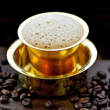

Idli
Idli is a soft, steamed rice cake, usually served with sambar and chutney.

Dosa
A crispy, thin pancake made from fermented rice and urad dal batter.

Chettinad Chicken
A spicy and aromatic chicken dish from the Chettinad region.

Pongal
A traditional dish made with rice, lentils, and ghee, often eaten for breakfast.

Filter Coffee
South Indian filter coffee is a strong, frothy drink enjoyed by many.